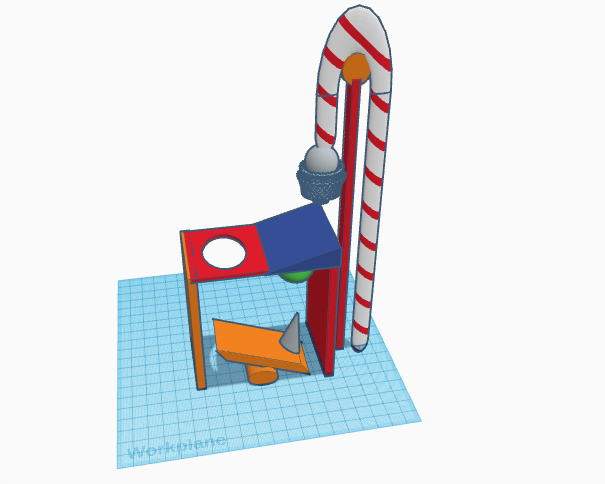
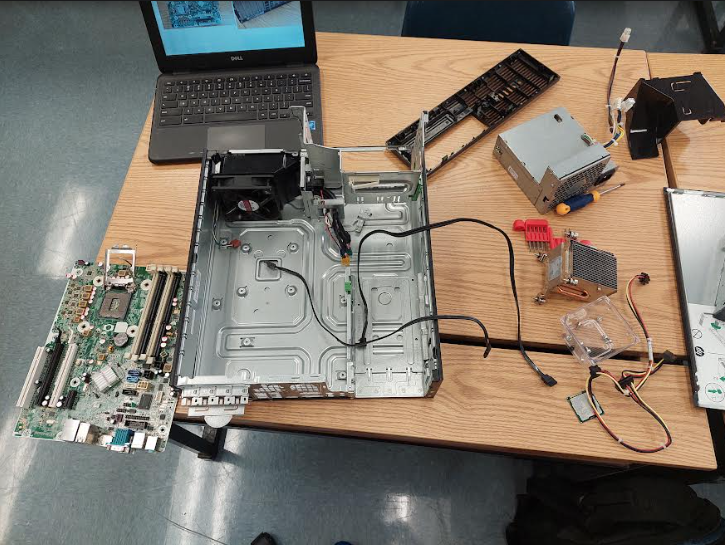
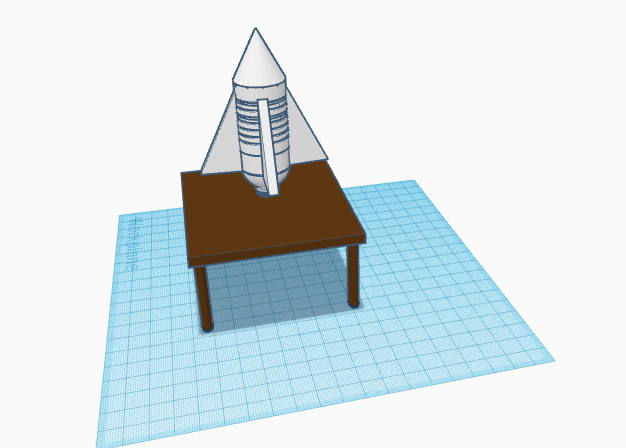
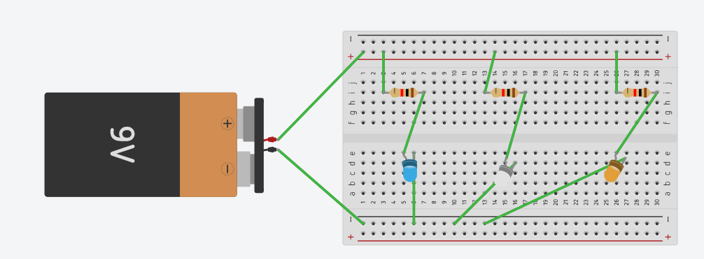
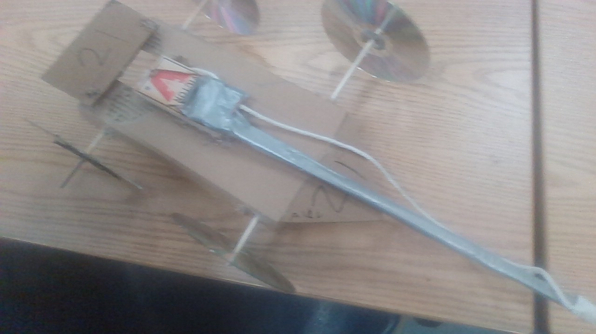
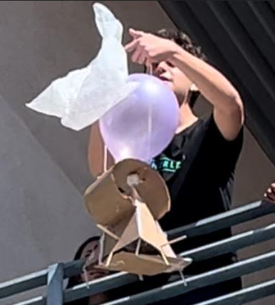

8/24/23 - Today we played marble tunnel, It was the right side of the class against the left side, I was on the left side, but the right team won, we also learned about the six Goldberg machines
9/11/23 - We were introduced to the Rube Goldberg machines and cading. we built our prototype of the rube goldberg machine on it.
9/18/23 - We had to fix some minor problems with a bunch of tapes for our rude Goldberg machine. I saved the group with the idea of a car and brought the batmobile, in our machine we used a wheel and axle, an inclined plane, and a lever
9/29/23 - we dissected a computer and saw all the different parts of the computer 
10/4/2023 -, David, Brooklyn and I built a prosthetic hand using cardboard tape and rope. we cut a hand out of cardboard, poked holes in the knuckles, tied the rope through the holes, taped the rope together, and put tape on the fingers as extra grip.
10/20/23 -, Kevin, Valentine, and I built a bottle rocket this week. Putting three cardboard fins near the bottle's side and cap and a paper cone at the bottom wich was a easy design. When we launched the rocket it fell apart mid air but after that I had the idea f just using the bottle with nothing on it and it went one for eh furthest 
10/25/23 -This week, me, tony, and Brooklyn made a water filter . We used, rocks, pebbles, sand, and cotton balls to turn the dirty water into lean water. On the first try, we packed 10 cotton balls down, rocks, pebbles, sand. we kept doing this three times before there was no difference. After it got stuck we made a second filter and change the order of the materials. We switched rock and sand, but the filter did not work as good as the first one but after that failure we put in less sand and when the water came out it was clear
11/3/23- this week we went into elecctrical enginerring unit with circuts. we learned about breadbboarding wich is used to temporarliy move elctricsl signals around. Me, brookklyn and avid had to made certain circuts eith the bread boared, it was really hard and not enjoyable. In the end we gave up and asked for help then finished the assignment
11/6/23 this week me brookyln and david had to make a business slide shows. I cam up with the idea of a buklet proff 7 eleven becasue seven elevens get rovbed alot. i mad verything bulllet proof n the 7 elevven even the chip bags so the copany wont have to buy new chips. me and brooklyn mad the slides while david was one his phoin watchng videos so dutring the slide me and brooklyn though of everything
1/12 today we learned about the principles of chemical engineering and diffrent fields of chemicasl engineering.i made oobleck all by myself becasue my table mtes worked in a group of three. oobleck is mde of water and cornstarch and is a non newto nian fluid, meaning its hard when you apply force and like water when no force is aplied.
1/29 for 2 weeks me and tony have been thinking of mousetrap car ideas and thought of a normal looking car. for our reserch we watched mark rober video to seek inspiration. we had to make a cad about our car
2/14 tony and i finsihsed building our car today and oit goes really far. i used 1 feet of rope tied arounf the back axle of the car. Our car is very inconsestint, one time it wen 9 feet another 17 and the furthest so far is 22 feet. we used a 8 inches foot rod and a 1 foor axle. using the equation the prediction was 120 inchs or 10 feet but we exeeded the equation and went 22 feet

2/28 - I, Tony, and Valentin built our second iteration of the car. it was bigger and had a longer rod but in the end, it did not move at all becasue it was too big and heavy to move. we took the rod and put it on the first iteration of the car, the rod was much longer than the car by 5 inches probably I don't remember. the second iteration is basically the first but with a longer rod that was 15 inches compared to the old 6-inch one. it went 37.3 feet compared to our old measly 22 feet. 
3/4 - i started off working with vaentin and tony about the eggdrop but thankfully mr. kim sai i can work alone. i came up with a triangle base with chec ckered holes. the traingle wich is hollow catches the wind and slows down the egg andn the checkered base help maintain a precise anount of air so it dosent flip. aroiund the triangle i will make a ball so when it touches the ground it rolls around and disperses its enrgy in the role. i will keep the ballons in the traingle to coushin the egg instead of using them to sloww the fall since i have the traingle.the ball will have 2 layers and bewteen the layers there will be some cotton. 
3/8 - i finsihed my eggdrop today with the idea of putting my egg in a balloon but it dident fit. i just put the egg in the top part of the pyramid and stuffed it with cotten. I dropped my prohect and the egg cracked, it wasent the structure it was that the egg fell out of the build and died. the seond iteration i put a floor to the pyramid and made sure the egg stays in place and survives. in the end when i droped my second atempt it survived and i was crowned the egg king.